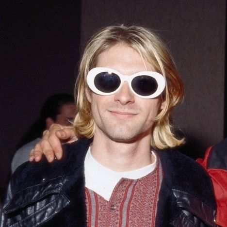
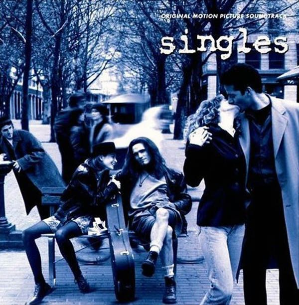
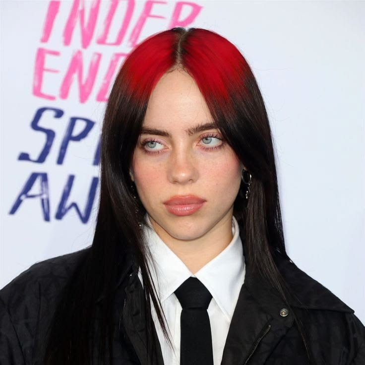

Líder y compositor de Nirvana, Kurt definió de forma involuntaria el uniforme del movimiento. Su desinterés por la moda comercial lo llevó a popularizar la superposición de camisetas rotas, los suéteres oversized deshilachados de rayas rojas y negras, las clásicas gafas de sol ovaladas ovalistas "Kurt Cobe" y las zapatillas de lona gastadas.

Película de Cameron Crowe que funciona como la cápsula del tiempo perfecta del auge del grunge de principios de los 90. Con cameos de bandas locales icónicas y una ambientación realista, el largometraje codificó la vestimenta urbana, las capas de franela cepillada, las chaquetas de cuero áspero y la actitud apática de la juventud de Seattle para el mundo.

La máxima exponente del grunge moderno, quien adaptó la apatía y el descontento de los 90 al contexto de la Generación Z en plataformas como Instagram. Su estilo desafía la hipersexualización de la industria musical mediante el uso de siluetas masivas y andróginas. Popularizó las bermudas de mezclilla gigantescas, sudaderas oversized con gráficos de anime o bandas de metal, cadenas pesadas de plata, cabello teñido de colores neón con raíces oscuras y zapatillas deportivas de bota ancha.
Líder de la banda Hole, Courtney originó la vertiente estética "Kinderwhore". Su estilo consistía en deconstruir la feminidad tradicional mediante vestidos slip de seda rasgados de estilo vintage victoriano, abrigos de piel sintética desaliñados, medias de malla rotas y maquillaje corrido pesado, creando una presencia imponente e inconformista.